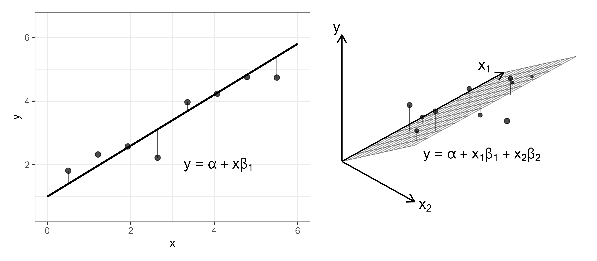
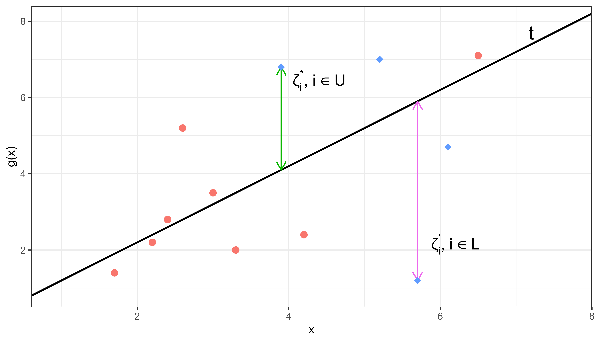
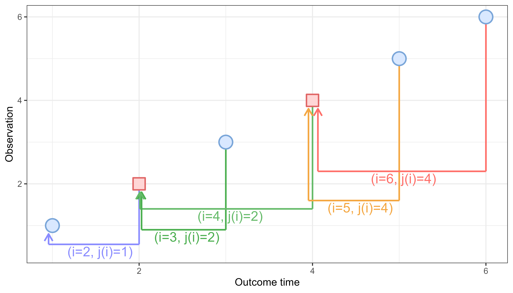

13 Support Vector Machines
Support vector machines are a popular model class in regression and classification settings due to their ability to make accurate predictions for complex high-dimensional, non-linear data. Survival support vector machines (SSVMs) predict continuous responses that can be used as ranking predictions with some formulations that provide survival time interpretations. This chapter starts with SVMs in the regression setting (Section 13.1) before moving to adaptations for survival analysis (Section 13.2).
13.1 SVMs for regression
In simple linear regression, the aim is to estimate the line \(y = \alpha + x\beta_1\) by estimating the \(\alpha,\beta_1\) coefficients. As the number of coefficients increases, the goal is to instead estimate the hyperplane, which divides the higher-dimensional space into two separate parts. This is visualized in Figure 13.1. With a single predictor (left panel), predictions are represented by a line of the form \(y = \hat{\alpha} + x\hat{\beta}_1\). With two predictors (right panel), the prediction surface becomes a plane of the form \(y = \hat{\alpha} + x_1\hat{\beta}_1 + x_2\hat{\beta}_2\). More generally, as additional predictors are introduced, the prediction surface extends to a higher-dimensional hyperplane.

Continuing the linear regression example, consider a simple model where the objective is to find the \(\boldsymbol{\mathbf{\beta}} = ({\beta}_1 \ {\beta}_2 \cdots {\beta}_{p})^\top\) coefficients that minimize,
\[ \sum^n_{i=1} (g(\mathbf{x}_i \mid \boldsymbol{\theta}) - y_i)^2, \]
where,
\[ g(\mathbf{x}_i \mid \boldsymbol{\theta}) = \alpha + \mathbf{x}_i^\top\boldsymbol{\beta}, \quad \boldsymbol{\theta}= (\alpha, \boldsymbol{\beta}), \]
with covariates \(\mathbf{x}_i \in \mathbb{R}^p\) and outcome \(y_i \in \mathbb{R}\). In a higher-dimensional space, models with many coefficients may overfit the training data and perform poorly on new observations. To control this, a penalty term can be added to shrink coefficient magnitudes and encourage smoother, less extreme prediction surfaces, commonly of the form:
\[ \frac{1}{2} \sum^n_{i=1} (g(\mathbf{x}_i \mid \boldsymbol{\theta}) - y_i)^2 + \frac{\xi}{2} \|\boldsymbol{\beta}\|^2, \tag{13.1}\]
for some penalty term \(\xi \in \mathbb{R}_{\geq 0}\). The first term minimizes the total squared difference between predictions and observed outcomes, while the second penalizes large coefficients. Larger values of \(\xi\) place greater emphasis on shrinkage and model simplicity, whereas smaller values prioritize closer fit to the training data. Minimizing this objective results in a hyperplane representing the best regularized linear relationship between covariates and outcomes.
Similarly to linear regression, support vector machines (SVMs) (Cortes and Vapnik 1995) also fit a hyperplane, \(g\), on given training data, \(\mathbf{X}\). However, in SVMs, the goal is to fit a flexible, non-linear hyperplane that minimizes the difference between predictions and the observed outcomes for individual observations. A core feature of SVMs is that one does not try to fit a hyperplane that makes perfect predictions as this would overfit the training data. Instead, SVMs use a regularized error function, which allows incorrect predictions (errors) for some observations, with the magnitude of error controlled by an \(\epsilon>0\) hyperparameter, a penalty hyperparameter \(C\), and slack parameters \(\boldsymbol{\mathbf{\zeta^\dagger}} = ({\zeta^\dagger}_1 \ {\zeta^\dagger}_2 \cdots {\zeta^\dagger}_{n})^\top\) and \(\boldsymbol{\mathbf{\zeta^\ddagger}} = ({\zeta^\ddagger}_1 \ {\zeta^\ddagger}_2 \cdots {\zeta^\ddagger}_{n})^\top\):
\[ \begin{aligned} & \min_{\boldsymbol{\theta}, \boldsymbol{\zeta}^\dagger, \boldsymbol{\zeta}^\ddagger} \frac{1}{2} \|\boldsymbol{\beta}\|^2 + C \sum^n_{i=1}(\zeta^\dagger_i + \zeta_i^\ddagger) \\ & \textrm{subject to} \begin{dcases} g(\mathbf{x}_i \mid \boldsymbol{\theta}) & \geq y_i -\epsilon - \zeta^\dagger_i, \\ g(\mathbf{x}_i \mid \boldsymbol{\theta}) & \leq y_i + \epsilon + \zeta_i^\ddagger, \\ \zeta^\dagger_i, \zeta_i^\ddagger & \geq 0, \\ \forall i = 1,\ldots,n, \end{dcases} \end{aligned} \tag{13.2}\]
where \(g(\mathbf{x}_i \mid \boldsymbol{\theta}) = \alpha + \mathbf{x}_i^\top\boldsymbol{\beta}\) for model weights \(\boldsymbol{\beta}\in \mathbb{R}^p\) and \(\alpha \in \mathbb{R}\) and the same training data, \((\mathbf{x}_i, y_i)\), as above. Note that the regularization trade-off controlled by \(\xi\) in (13.1) is now controlled by the \(C\) penalty on the error terms.
If an observation \(i\) lies within the \(\epsilon\)-tube, then by definition,
\[ y_i - \epsilon \le g(\mathbf{x}_i \mid \boldsymbol{\theta}) \le y_i + \epsilon. \]
As slack parameters must be non-negative (third constraint), the individual slack parameters for this observation attain their minimum at \(\zeta_i^\dagger=\zeta_i^\ddagger=0\). Consequently, observations within the \(\epsilon\)-tube contribute nothing to the penalty term in the objective function (13.2). If every observation fell within the \(\epsilon\)-tube, then all slack penalties would be zero and the remaining objective \(\|\boldsymbol{\beta}\|^2/2\) is minimized by \(\boldsymbol{\beta}= \mathbf{0}\), resulting in a constant (and uninformative) prediction surface: \(g(\mathbf{x}_i \mid \hat{\boldsymbol{\theta}}) = \hat{\alpha}\). In summary, observations within the \(\epsilon\)-tube do not influence fitting of the optimal prediction surface (though they may constrain the intercept, \(\hat{\alpha}\)).
The optimization therefore depends entirely on the influential observations outside the \(\epsilon\)-tube, known as the support vectors. For these observations, the optimization minimizes the individual slack parameters, \(\zeta_i^\dagger > 0\) or \(\zeta_i^\ddagger > 0\), which quantify the magnitude of prediction error for each observation. Note that in the literature, support vectors are usually defined to also include observations on the \(\epsilon\)-tube as well as outside it, as observations on the boundary still correspond to active constraints despite having \(\zeta_i^\dagger = \zeta_i^\ddagger = 0\). The penalty hyperparameter, \(C \in \mathbb{R}_{>0}\), controls the slack parameters. As \(C\) increases, the number of slack violations (errors) is encouraged to decrease, which may result in overfitting with lower bias but higher variance. In contrast, smaller values of \(C\) are more likely to introduce higher bias but lower variance (Hastie et al. 2001). \(C\) should be tuned to control this trade-off.
Figure 13.2 visualizes a support vector regression model in two dimensions. Red dots are the observations within the \(\epsilon\)-tube and blue diamonds are influential support vectors with some slack parameters visualized.
![Line graph with g(x) on the y-axis and 'x' on the x-axis. A solid black line labelled 'y' runs along g(x)=x. Parallel to this line, above and below, are two dotted lines labelled 'y+epsilon' (green) and 'y-epsilon' (purple) respectively. These dotted lines form the boundaries of the epsilon-tube. Red dots lie between the dotted lines and blue diamonds are outside the lines. One blue diamond above the top dotted line is labelled to reflect that it represents the distance to a slack parameter and one blue diamond below the bottom line is the distance to the other slack parameter.](Figures/svm/regression.png)
The other core feature of SVMs is exploiting the kernel trick, which uses functions known as kernels to allow the model to learn a non-linear hyperplane while keeping the computations limited to lower-dimensional settings. Once the model coefficients have been estimated using (13.2), predictions for a new observation \(\mathbf{x}_*\) can be made with a function of the form:
\[ g(\mathbf{x}_* \mid \hat{\boldsymbol{\theta}}) = \sum^n_{i=1} \hat{\mu}_i K(\mathbf{x}_i, \mathbf{x}_*) + \hat{\alpha}. \tag{13.3}\]
The optimization in (13.2) is written in its primal form, where the model is parameterized directly through \(\boldsymbol{\beta}\) and \(\alpha\). In practice, SVMs are typically estimated using an equivalent dual formulation based on Lagrange multipliers, \(\mu_i\), which gives rise to the prediction function in (13.3). In this form, \(\hat{\boldsymbol{\theta}} = (\hat{\boldsymbol{\mu}}, \hat{\alpha})\) are the estimated dual parameters. The dual formulation absorbs information from the primal coefficients and slack parameters, replacing explicit estimation of \(\boldsymbol{\beta}\) and \(\boldsymbol{\zeta}\) with an equivalent representation based on Lagrange multipliers, \(\hat{\boldsymbol{\mu}}\), kernels, \(K\), and the intercept, \(\hat{\alpha}\). In the dual formulation, the support vectors are those with \(\hat{\mu}_i > 0\). Details of estimation of \(\hat{\mu}_i\) are beyond the scope of this book.
The symbol \(K\) in (13.3) is a kernel function, with common choices including the:
- linear kernel: \(K(\mathbf{x}_i, \mathbf{x}_*) = \mathbf{x}_i^\top\mathbf{x}_*\);
- radial kernel: \(K(\mathbf{x}_i, \mathbf{x}_*) = \exp(-\omega\|\mathbf{x}_i - \mathbf{x}_*\|^2); \quad \omega \in \mathbb{R}_{>0}\);
- polynomial kernel: \(K(\mathbf{x}_i, \mathbf{x}_*) = (1 + \mathbf{x}_i^\top\mathbf{x}_*)^d; \quad d \in \mathbb{N}_{> 0}\).
The choice of kernel, its parameters, the regularization parameter \(C\), and the acceptable error \(\epsilon\), are all tunable hyperparameters (Section 2.5), which makes the support vector machine a highly adaptable and often well-performing machine learning method. The parameters \(C\) and \(\epsilon\) often have no clear a priori meaning (especially in the survival setting, where the rankings are abstract) and thus require tuning over a great range of values; inadequate tuning often results in a poor model fit (Probst et al. 2019).
13.2 SVMs for survival analysis
Extending SVMs to survival support vector machines (SSVMs) is a case of: i) identifying the quantity to predict; and ii) updating the optimization problem (13.2) and prediction function (13.3) to accommodate censoring. In the first case, SSVMs can be used to either make survival time or ranking predictions, which are discussed in turn. The notation above is reused below for SSVMs, with additional notation introduced when required and now using the survival training data \(\{(\mathbf{x}_i, t_i, \delta_i)\}^n_{i=1}\).
13.2.1 Survival time SSVMs
To begin, consider the objective for support vector regression with the \(y_i\) variable replaced with the usual outcome time \(t_i\):
\[ \begin{aligned} & \min_{\boldsymbol{\theta}, \boldsymbol{\zeta}^\dagger, \boldsymbol{\zeta}^\ddagger} \frac{1}{2} \|\boldsymbol{\beta}\|^2 + C_s \sum^n_{i=1}(\zeta^\dagger_i + \zeta_i^\ddagger) \\ & \textrm{subject to} \begin{dcases} g(\mathbf{x}_i \mid \boldsymbol{\theta}) & \geq t_i -\epsilon - \zeta^\dagger_i, \\ g(\mathbf{x}_i \mid \boldsymbol{\theta}) & \leq t_i + \epsilon + \zeta_i^\ddagger, \\ \zeta^\dagger_i, \zeta_i^\ddagger & \geq 0, \\ \forall i = 1,\ldots,n, \end{dcases} \end{aligned} \tag{13.4}\]
where \(C_s \in \mathbb{R}_{>0}\) indicates the penalty parameter associated with a survival time SSVM.
In survival analysis, this translates to fitting a hyperplane in order to predict the true survival time. However, as with all adaptations from regression to survival analysis, there needs to be a method for incorporating censoring. To do so, consider the first constraint in (13.4) in isolation,
\[ g(\mathbf{x}_i \mid \boldsymbol{\theta}) \geq t_i - \epsilon - \zeta^\dagger_i, \]
where the right-hand side is conditioned on the observed outcome time. In words, this constraint is ensuring the predicted survival time is greater than some lower-bound as a function of the observed outcome time \(t_i\). For right-censored and uncensored observations, this lower-bound is defined as the right-censoring or true event time respectively. In contrast, for left-censored observations, there is no informative lower-bound as all that is known is the event occurred at some time before \(t_i\). Technically, left-censored observations are bounded below at \(0\), however this lower bound provides little useful information for constraining predictions at the individual level.
Analogously, the second constraint,
\[ g(\mathbf{x}_i \mid \boldsymbol{\theta}) \leq t_i + \epsilon + \zeta_i^\ddagger, \]
places an upper-bound on the prediction, which is only defined for left-censored and uncensored observations. In contrast, it is unknown when a right-censored observation’s event actually occurred, so there is no meaningful upper-bound.
Let \(\mathcal{RC}\) be the set of right-censored observations, whose outcomes are bounded below by the right-censoring time, \(\mathcal{LC}\) be the set of left-censored observations, with outcomes bounded above by the left-censoring time, and \(\mathcal{UC}\) be the set of uncensored observations whose outcomes are bounded above and below by the exact outcome time. Let \(\mathcal{LB}\) be the set of observations bounded below,
\[ \mathcal{LB} = \mathcal{RC} \cup \mathcal{UC}, \]
and \(\mathcal{UB}\) be the set of observations bounded above,
\[ \mathcal{UB} = \mathcal{LC} \cup \mathcal{UC}. \]
These definitions lead to the following optimization problem (Figure 13.3) (Shivaswamy et al. 2007):
\[ \begin{aligned} & \min_{\boldsymbol{\theta}, \boldsymbol{\zeta}^\dagger, \boldsymbol{\zeta}^\ddagger} \frac{1}{2}\|\boldsymbol{\beta}\|^2 + C_s\Big(\sum_{i \in \mathcal{LB}} \zeta^\dagger_i + \sum_{i \in \mathcal{UB}} \zeta_i^\ddagger\Big) \\ & \textrm{subject to} \begin{dcases} g(\mathbf{x}_i \mid \boldsymbol{\theta}) & \geq t_i -\zeta^\dagger_i, i \in \mathcal{LB}, \\ g(\mathbf{x}_i \mid \boldsymbol{\theta}) & \leq t_i + \zeta^\ddagger_i, i \in \mathcal{UB}, \\ \zeta^\dagger_i \geq 0, \forall i\in \mathcal{LB}; \zeta^\ddagger_i \geq 0, \forall i \in \mathcal{UB}. \end{dcases} \end{aligned} \tag{13.5}\]
In general, SSVMs do not use \(\epsilon\) parameters in order to better accommodate censoring and to help prevent the same penalization of over- and under-predictions. If \(\epsilon\) were introduced and if no observations were censored, then the optimization (13.5) simplifies to the regression optimization (13.2).
In contrast to this formulation, one could introduce more \(\epsilon\) and \(C_s\) parameters to separate between under- and over-predictions and to separate right- and left-censoring, however this leads to eight tunable hyperparameters, which is inefficient and may increase overfitting (Fouodo et al. 2018; Land et al. 2011).
If only right-censoring is present in the data then the algorithm can be simplified by removing the second constraint completely for anyone censored:
\[ \begin{aligned} & \min_{\boldsymbol{\theta}, \boldsymbol{\zeta}^\dagger, \boldsymbol{\zeta}^\ddagger} \frac{1}{2}\|\boldsymbol{\beta}\|^2 + C_s \sum_{i = 1}^n (\zeta^\dagger_i + \zeta_i^\ddagger) \\ & \textrm{subject to} \begin{dcases} g(\mathbf{x}_i \mid \boldsymbol{\theta}) & \geq t_i - \zeta^\dagger_i, \\ g(\mathbf{x}_i \mid \boldsymbol{\theta}) & \leq t_i + \zeta^\ddagger_i, i:\delta_i=1, \\ \zeta^\dagger_i, \zeta_i^\ddagger & \geq 0, \\ \forall i = 1,\ldots,n. \end{dcases} \end{aligned} \tag{13.6}\]
With the prediction for a new observation \(\mathbf{x}_*\) calculated as,
\[ \hat{g}(\mathbf{x}_* \mid \hat{\boldsymbol{\theta}}) = \sum^n_{i=1} \left[\hat{\mu}_i^\dagger K(\mathbf{x}_i, \mathbf{x}_*) - \delta_i\hat{\mu}_i^\ddagger K(\mathbf{x}_i, \mathbf{x}_*)\right] + \hat{\alpha}, \]
where again \(K\) is a kernel function and \(\hat{\mu}_i^\dagger, \hat{\mu}_i^\ddagger\) are Lagrange multipliers.

13.2.2 Ranking SSVMs
Support vector machines can be used to estimate rankings by penalizing predictions that result in disconcordant pairs. Recall the definition of concordance from Chapter 6: a pair of observations \((i, j)\) is comparable if \(t_i < t_j \wedge \delta_i = 1\), and concordant if \(r_i > r_j\) where \(r_i, r_j\) are the predicted ranks for observations \(i\) and \(j\) respectively and a higher value implies greater risk. Using the prognostic index as a ranking prediction (Section 5.5), a pair of observations is concordant if \(g(\mathbf{x}_i) > g(\mathbf{x}_j)\) when \(t_i < t_j\), leading to (Van Belle et al. 2007, 2008):
\[ \begin{aligned} & \min_{\boldsymbol{\theta}, \boldsymbol{\zeta}} \frac{1}{2}\|\boldsymbol{\beta}\|^2 + C_r\sum_{(i,j) \in \mathcal{CP}} \zeta_{ij} \\ & \textrm{subject to} \begin{dcases} g(\mathbf{x}_i \mid \boldsymbol{\theta}) - g(\mathbf{x}_j \mid \boldsymbol{\theta}) & \geq 1 - \zeta_{ij}, \\ \zeta_{ij} & \geq 0, \\ \forall (i,j) \in \mathcal{CP}, \end{dcases} \end{aligned} \tag{13.7}\]
where \(\mathcal{CP}\) is the set of comparable pairs defined by \(\mathcal{CP} = \{(i, j) : t_i < t_j \wedge \delta_i = 1\}\), and \(C_r \in \mathbb{R}_{>0}\) indicates the penalty parameter associated with a ranking SSVM. The addition of the constant \(1\) in the first constraint defines the SSVM margin between comparable observations. The value \(1\) itself is arbitrary and conventional, as the overall scale is absorbed by the model coefficients, slack parameters, and hyperparameters. The constraint encourages not only correct ordering but also a minimum separation between comparable predictions.
Given that the number of possible pairs grows quadratically with the number of observations, the optimization problem (13.7) quickly becomes difficult to solve with a very long runtime. One solution is a nearest neighbor approach that sorts observations in order of outcome time and then compares each data point \(i\) with the observation that has the next smallest survival time, skipping over censored observations (Van Belle et al. 2008, 2011):
\[ j(i) := \mathop{\mathrm{arg\,max}}_{j = 1,\ldots,n} \{t_j : t_j < t_i \wedge \delta_j = 1\}. \tag{13.8}\]
This is visualized in Figure 13.4 where six observations are sorted by outcome time from largest (right) to smallest (left). From right to left, the first pair is made by matching the observation to the first uncensored outcome to the left, this continues to the end. In implementation, to ensure all observations are used in the optimization, the algorithm sets the first outcome to be uncensored hence observation \(2\) being compared to observation \(1\) in Figure 13.4.

Using this method, the algorithm becomes:
\[ \begin{aligned} & \min_{\boldsymbol{\theta}, \boldsymbol{\zeta}} \frac{1}{2}\|\boldsymbol{\beta}\|^2 + C_r\sum_{i =1}^n \zeta_i \\ & \textrm{subject to} \begin{dcases} g(\mathbf{x}_{j(i)}) - g(\mathbf{x}_i \mid \boldsymbol{\theta}) & \geq t_i - t_{j(i)} - \zeta_i, \\ \zeta_i & \geq 0, \\ \forall i = 1,\ldots,n. \end{dcases} \end{aligned} \tag{13.9}\]
Note that \(j(i)\) is defined in (13.8) so that \(t_{j(i)} < t_i\). Under the convention that larger values of \(g(\mathbf{x})\) imply greater risk, the constraint in (13.9) requires \(g(\mathbf{x}_{j(i)}) - g(\mathbf{x}_i) > 0\) (thus, \(g(\mathbf{x}_{j(i)}) > g(\mathbf{x}_i)\)) whenever the slack term, \(\zeta_i\), is sufficiently small as \(t_i - t_{j(i)} > 0\). The updated right hand side of the constraint defines a margin that increases with the difference in observed outcome times, while the slack term, \(\zeta_i\), captures violations beyond this difference.
Predictions for a new observation \(\mathbf{x}_*\) are calculated as,
\[ g(\mathbf{x}_* \mid \hat{\boldsymbol{\theta}}) = \sum^n_{i=1} \hat{\mu}_i(K(\mathbf{x}_{j(i)}, \mathbf{x}_*) - K(\mathbf{x}_i, \mathbf{x}_*)) + \hat{\alpha}, \]
where \(\hat{\mu}_i\) are again Lagrange multipliers.
There do not appear to be any adaptations to the ranking SSVM for other censoring or truncation types.
13.2.3 Hybrid SSVMs
Finally, Van Belle et al. (2011) noted that the ranking algorithm could be updated to add the constraints of the survival time model, thus providing a model that simultaneously optimizes for ranking whilst providing continuous values that can be interpreted as survival time predictions. This results in the hybrid SSVM:
\[ \begin{aligned} & \min_{\boldsymbol{\theta}, \boldsymbol{\zeta}, \boldsymbol{\zeta}^\dagger, \boldsymbol{\zeta}^\ddagger} \frac{1}{2}\|\boldsymbol{\beta}\|^2 + \textcolor{CornflowerBlue}{C_r\sum_{i =1}^n \zeta_i} + \textcolor{Rhodamine}{C_s \sum^n_{i=1}(\zeta_i^\dagger + \zeta_i^\ddagger)} \\ & \textrm{subject to} \begin{dcases} \textcolor{CornflowerBlue}{g(\mathbf{x}_{j(i)} \mid \boldsymbol{\theta}) - g(\mathbf{x}_i \mid \boldsymbol{\theta})} & \textcolor{CornflowerBlue}{\geq t_i - t_{j(i)} - \zeta_i}, \\ \textcolor{Rhodamine}{g(\mathbf{x}_i \mid \boldsymbol{\theta})} & \textcolor{Rhodamine}{\leq t_i + \zeta^\ddagger_i, i:\delta_i=1}, \\ \textcolor{Rhodamine}{g(\mathbf{x}_i \mid \boldsymbol{\theta})} & \textcolor{Rhodamine}{\geq t_i - \zeta^\dagger_i}, \\ \textcolor{CornflowerBlue}{\zeta_i}, \textcolor{Rhodamine}{\zeta_i^\dagger, \zeta_i^\ddagger} & \geq 0, \\ \forall i = 1,\ldots,n. \end{dcases} \end{aligned} \]
The blue parts of the equation make up the ranking model and the red parts are the survival time model.
Setting \(C_r = 0\) recovers the survival time SSVM (13.6) while \(C_s = 0\) results in the ranking SSVM (13.9) (removing associated constraints for both). Hence, fitting the hybrid model and tuning these parameters is an efficient way to automatically detect which SSVM is best suited to a given task.
Once the model is fit, a prediction from given features \(\mathbf{x}_* \in \mathbb{R}^p\), can be made using the equation below, again with the ranking and survival time contributions highlighted in blue and red respectively.
\[ \hat{g}(\mathbf{x}_* \mid \hat{\boldsymbol{\theta}}) = \sum^n_{i=1} \left[\textcolor{CornflowerBlue}{\hat{\mu}_i(K(\mathbf{x}_{j(i)}, \mathbf{x}_*) - K(\mathbf{x}_i, \mathbf{x}_*))} + \textcolor{Rhodamine}{\hat{\mu}^\dagger_i K(\mathbf{x}_i, \mathbf{x}_*) - \delta_i\hat{\mu}_i^\ddagger K(\mathbf{x}_i, \mathbf{x}_*)}\right] + \hat{\alpha} \]
where \(\hat{\mu}_i, \hat{\mu}_i^\dagger, \hat{\mu}_i^\ddagger\) are Lagrange multipliers and \(K\) is a chosen kernel function, which may have further hyperparameters to select or tune.
13.2.4 Competing risks
As of the time of publication, no SSVMs for competing risks appear to have been published (Djangang et al. 2025; Kantidakis et al. 2023; Monterrubio-Gómez et al. 2024). As discussed in Section 5.4, there is not a straightforward concept of time-to-event competing risks predictions so survival time SSVMs are unlikely to be extended to competing risks. For the ranking SSVMs, theoretically one could use any of the methods to estimate per-cause risk by considering each risk separately and censoring observations that experience a different risk, however this has not been validated in the literature. Moreover, the risks predicted by SSVMs correspond to abstract relative risks and not to an interpretable hazard, meaning there is no clear method to transform these predictions into a CIF or any other distribution function (Section 5.3). Theoretically, one could consider a transformation based on survival time predictions; however, this approach also does not appear to have been explored in the literature.